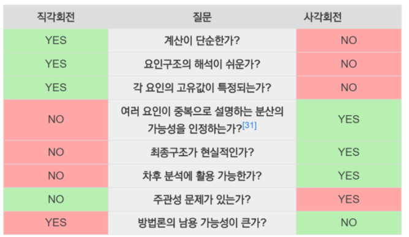

display_png(file = "C:\\Users\\rkdcj\\OneDrive\\바탕 화면\\요인분석.png")
GANGCHEOL LEE
June 21, 2021
변수들간의 상관관계를 고려하여 서로 유사한 변수들을 묶어 새로운 잠재요인을 추출해내는 분석 방법
주성분 분석과의 차이는 새로운 잠재요인의 연구자가 이름을 명명한다는 것이다.
주성분 분석은 제 1주성분이 가장 중요하고, 그 다음으로 제2 주성분이 중요하게 취급되나, 요인분석에서 생성한 잠재요인들간에는 대등한 관계이다.
또한 목표변수 \(y\) 를 고려하지 않고 주어진 변수들을 비슷한 성격으로 묶어서 새로운 잠재 변수를 생성
요인(factor) : 상관계수가 높은 변수들을 묶어 새롭게 생성한 변수 집단.
요인 적재값(factor loading) : 변수와 해당 요인간의 상관계수
요인 행렬 (factor matrix) : 요인들에 대한 모든 변수의 요인 적재값을 모은 행렬
고유값 (eigenvalue) : 각 요인에 대한 모든 변수들의 요인 적재값 제곱의 합
공통성(community) : 여러 요인이 설명할 수 있는 한 변수의 분산의 양을 백분율로 나타낸 것
1. 주성분분석 : 변수들로부터 요인을 추출해내는 방식으로, 전체 분산을 토대로 요인을 추출한다. 요인분석에서 가장 많이 사용되는 방식
2. 공통요인분석 : 잠재요인으로부터 변수들이 산출된 것으로 보는 방식으로, 공통분산만을 토대로 요인을 추출한다.
1. 고유값을 기준으로 할 때는, 고유값이 1 이상에 해당하는 요인들을 추출한다.
2. 스크린 도표에서 요인의 설명력이 하락하다가 완만한 하락으로 추세가 바뀌기 직전 요인의 수를 기준으로 요인을 추출한다.
3. 경우에 따라 추출할 요인의 수를 사전에 정의한 후 요인분석을 수행할 수도 있다.
1. 데이터 입력
2. 상관계수 산출 : 동질적이거나 유사한 변수들을 하나의 요인으로 나타내기 위해 변수들 간의 상관계수를 계산한다.
3. 요인 추출 : 주성분분석 또는 공통요인분석을 통해 요인을 추출하고, 고유값과 스크리 도표 등을 활용하여 적절한 요인의 수를 선택한다.
4. 요인 적재량 산출
5. 요인회전 : 최초 요인행렬은 변수들의 분산을 어느 정도는 설명할 수 있지만, 요인과 각 변수들 간의 관계를 명확하게 나타내지 않는다.
* 원활한 요인 해석과 의미있는 요인패턴(변수와 요인의 상관행렬)을 찾기 위해 분산을 재분배 시키는 요인 회전 단계는 매우 중요하다.
* 요인회전의 종류로는 직각회전(쿼티멕스, 베리맥스, 미쿼맥스)과 비직각회전(오블리민,프로맥스)이 있다.
6. 생성된 요인 해석
7. 요인점수 산출 : 관측치별 요인점수는 요인점수 계수와 표준화된 관측치의 곱으로 구하며, 요인별로 이 값을 합하면 요인별 요인점수가 된다.
8. 요인점수를 산출하는 방법에는 “회귀분석(LSE : 요인값과 추정된 요인값 간 차이 제곱의 합이 최소가 되게함), Bartlett(요인들의 제곱합이 최소가 되게)” 등이 있다.
### 직각회전 : 회전된 인자들이 서로 상관되지 않도록 제약
1. 베리맥스 (Variance is maximized) : 요인행렬을 변환할 때 행렬의 열을 기준으로 하여 더 큰 값은 크게, 작은 값은 더 작게 회전하는 길을 찾는다.
2. 쿼티맥스 : 요인행렬의 행을 기준으로 분산을 극대화한다. 제 1요인만 과대 해석하고 기타 요인은 과소해석하는 문제가 있어, 단일요인 구조가 존재한다는 확신이 있을 때에나 한정적으로 사용한다.
1. 회전된 요인간의 상관이 있다고 확신이 들 때 사용
2.오블리민과 프로맥스가 있으나 R에서는 프로맥스를 제공
요인추출법으로 주성분분석을 사용할 때는 procmp 혹은 principal 함수를 활용하며, 공통요인분석을 사용할 때는 factanal 함수를 활용한다.
factanal
swiss data : 1888년 경 스위스 내 47개 주의 사회경제적 지표와 출산율에 대한 데이터
원활한 분석을 위해 6가지 변수들을 min-max 정규화한 뒤 축소해보자.
'data.frame': 47 obs. of 6 variables:
$ Fertility : num 80.2 83.1 92.5 85.8 76.9 76.1 83.8 92.4 82.4 82.9 ...
$ Agriculture : num 17 45.1 39.7 36.5 43.5 35.3 70.2 67.8 53.3 45.2 ...
$ Examination : int 15 6 5 12 17 9 16 14 12 16 ...
$ Education : int 12 9 5 7 15 7 7 8 7 13 ...
$ Catholic : num 9.96 84.84 93.4 33.77 5.16 ...
$ Infant.Mortality: num 22.2 22.2 20.2 20.3 20.6 26.6 23.6 24.9 21 24.4 ...varimax임
Call:
factanal(x = swiss_fa, factors = 3)
Uniquenesses:
Fertility Agriculture Examination Education
0.005 0.286 0.213 0.114
Catholic Infant.Mortality
0.083 0.743
Loadings:
Factor1 Factor2 Factor3
Fertility -0.512 0.203 0.832
Agriculture -0.774 0.312 -0.129
Examination 0.751 -0.423 -0.211
Education 0.901 -0.262
Catholic -0.186 0.913 0.220
Infant.Mortality 0.500
Factor1 Factor2 Factor3
SS loadings 2.273 1.164 1.120
Proportion Var 0.379 0.194 0.187
Cumulative Var 0.379 0.573 0.759
The degrees of freedom for the model is 0 and the fit was 1e-04 cumulative Var를 보았을 때 세 요인은 전체 데이터 분산의 약 76%를 설명할 수 있다고 해석이 가능하다.